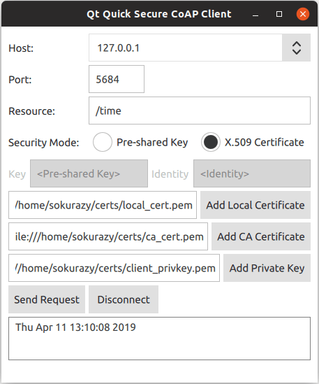

Quick Secure CoAP Client demonstrates how to create a secure CoAP client and use it in a Qt Quick application.
Running the Example
To run the example from Qt Creator, open the Welcome mode and select the example from Examples. For more information, see Qt Creator: Tutorial: Build and run.
To run the example application, you first need to set up a secure CoAP server. You can run the example with any secure CoAP server supporting one of the pre-shared key (PSK) or certificate authentication modes. For more information about setting up a secure CoAP server, see Setting Up a Secure CoAP Server.
Exposing C++ Classes to QML
In this example, you need to expose the QCoapClient class and the QtCoap namespace to QML. To achieve this, create a custom wrapper class and use the special registration macros.
Create the QmlCoapSecureClient class as a wrapper around QCoapClient. This class also holds the selected security mode and security configuration parameters. Use the Q_INVOKABLE macro to expose several methods to QML. Also use the QML_NAMED_ELEMENT macro to register the class in QML as CoapSecureClient.
class QmlCoapSecureClient : public QObject
{
Q_OBJECT
QML_NAMED_ELEMENT(CoapSecureClient)
public:
QmlCoapSecureClient(QObject *parent = nullptr);
~QmlCoapSecureClient() override;
Q_INVOKABLE void setSecurityMode(QtCoap::SecurityMode mode);
Q_INVOKABLE void sendGetRequest(const QString &host, const QString &path, int port);
Q_INVOKABLE void setSecurityConfiguration(const QString &preSharedKey, const QString &identity);
Q_INVOKABLE void setSecurityConfiguration(const QString &localCertificatePath,
const QString &caCertificatePath,
const QString &privateKeyPath);
Q_INVOKABLE void disconnect();
Q_SIGNALS:
void finished(const QString &result);
private:
QCoapClient *m_coapClient;
QCoapSecurityConfiguration m_configuration;
QtCoap::SecurityMode m_securityMode;
};
After that, register the QtCoap namespace, so that you can use the enums provided there:
namespace QCoapForeignNamespace
{
Q_NAMESPACE
QML_FOREIGN_NAMESPACE(QtCoap)
QML_NAMED_ELEMENT(QtCoap)
}
Adjusting Build Files
To make the custom types available from QML, update the build system files accordingly.
CMake
For a CMake-based build, add the following to the CMakeLists.txt:
qt_add_qml_module(quicksecureclient
URI CoapSecureClientModule
SOURCES
qmlcoapsecureclient.cpp qmlcoapsecureclient.h
QML_FILES
FilePicker.qml
Main.qml
)
qmake
For a qmake build, modify the quicksecureclient.pro file in the following way:
CONFIG += qmltypes
QML_IMPORT_NAME = CoapSecureClientModule
QML_IMPORT_MAJOR_VERSION = 1
...
qml_resources.files = \
qmldir \
FilePicker.qml \
Main.qml
qml_resources.prefix = /qt/qml/CoapSecureClientModule
RESOURCES += qml_resources
Using New QML Types
Now, when the C++ classes are properly exposed to QML, you can use the new types.
Creating the Client
CoapSecureClient is instantiated from the Main.qml file. It handles the QmlCoapSecureClient::finished() signal and updates the UI accordingly:
CoapSecureClient {
id: client
onFinished: (result) => {
outputView.text = result;
statusLabel.text = "";
disconnectButton.enabled = true;
}
}
The instance of QCoapClient is created when the user selects or changes the security mode in the UI. The QmlCoapSecureClient::setSecurityMode() method is invoked from the QML code, when one of the security modes is selected:
ButtonGroup {
id: securityModeGroup
onClicked: {
if ((securityModeGroup.checkedButton as RadioButton) === preSharedMode)
client.setSecurityMode(QtCoap.SecurityMode.PreSharedKey);
else
client.setSecurityMode(QtCoap.SecurityMode.Certificate);
}
}
On the C++ side, this method creates a QCoapClient and connects to its finished() and error() signals. The class handles both signals internally, and forwards them to the new finished() signal.
void QmlCoapSecureClient::setSecurityMode(QtCoap::SecurityMode mode)
{
// Create a new client, if the security mode has changed
if (m_coapClient && mode != m_securityMode) {
delete m_coapClient;
m_coapClient = nullptr;
}
if (!m_coapClient) {
m_coapClient = new QCoapClient(mode);
m_securityMode = mode;
connect(m_coapClient, &QCoapClient::finished, this,
[this](QCoapReply *reply) {
if (!reply)
emit finished(tr("Something went wrong, received a null reply"));
else if (reply->errorReceived() != QtCoap::Error::Ok)
emit finished(errorMessage(reply->errorReceived()));
else
emit finished(reply->message().payload());
});
connect(m_coapClient, &QCoapClient::error, this,
[this](QCoapReply *, QtCoap::Error errorCode) {
emit finished(errorMessage(errorCode));
});
}
}
Sending a Request
Click the Send Request button to set the security configuration based on the selected security mode and send a GET request:
Button {
id: requestButton
text: qsTr("Send Request")
enabled: securityModeGroup.checkState !== Qt.Unchecked
onClicked: {
outputView.text = "";
if ((securityModeGroup.checkedButton as RadioButton) === preSharedMode)
client.setSecurityConfiguration(pskField.text, identityField.text);
else
client.setSecurityConfiguration(localCertificatePicker.selectedFile,
caCertificatePicker.selectedFile,
privateKeyPicker.selectedFile);
client.sendGetRequest(hostComboBox.editText, resourceField.text,
parseInt(portField.text));
statusLabel.text = qsTr("Sending request to %1%2...").arg(hostComboBox.editText)
.arg(resourceField.text);
}
}
There are two overloads for the setSecurityConfiguration method.
The overload for the PSK mode simply sets the client identity and the pre-shared key:
void
QmlCoapSecureClient::setSecurityConfiguration(const QString &preSharedKey, const QString &identity)
{
QCoapSecurityConfiguration configuration;
configuration.setPreSharedKey(preSharedKey.toUtf8());
configuration.setPreSharedKeyIdentity(identity.toUtf8());
m_configuration = configuration;
}
And the overload for X.509 certificates reads the certificate files and the private key and sets the security configuration:
void QmlCoapSecureClient::setSecurityConfiguration(const QString &localCertificatePath,
const QString &caCertificatePath,
const QString &privateKeyPath)
{
QCoapSecurityConfiguration configuration;
const auto localCerts =
QSslCertificate::fromPath(QUrl(localCertificatePath).toLocalFile(), QSsl::Pem,
QSslCertificate::PatternSyntax::FixedString);
if (localCerts.isEmpty())
qCWarning(lcCoapClient, "The specified local certificate file is not valid.");
else
configuration.setLocalCertificateChain(localCerts.toVector());
const auto caCerts = QSslCertificate::fromPath(QUrl(caCertificatePath).toLocalFile(), QSsl::Pem,
QSslCertificate::PatternSyntax::FixedString);
if (caCerts.isEmpty())
qCWarning(lcCoapClient, "The specified CA certificate file is not valid.");
else
configuration.setCaCertificates(caCerts.toVector());
QFile privateKey(QUrl(privateKeyPath).toLocalFile());
if (privateKey.open(QIODevice::ReadOnly)) {
QCoapPrivateKey key(privateKey.readAll(), QSsl::Ec);
configuration.setPrivateKey(key);
} else {
qCWarning(lcCoapClient) << "Unable to read the specified private key file"
<< privateKeyPath;
}
m_configuration = configuration;
}
After setting the security configuration, the sendGetRequest method sets the request URL and sends a GET request:
void QmlCoapSecureClient::sendGetRequest(const QString &host, const QString &path, int port)
{
if (!m_coapClient)
return;
m_coapClient->setSecurityConfiguration(m_configuration);
QUrl url;
url.setHost(host);
url.setPath(path);
url.setPort(port);
m_coapClient->get(url);
}
When sending the first request, a handshake with the CoAP server is performed. After the handshake is successfully done, all the subsequent messages are encrypted, and changing the security configuration after a successful handshake won't have any effect. If you want to change it, or change the host, you need to disconnect first.
void QmlCoapSecureClient::disconnect()
{
if (m_coapClient)
m_coapClient->disconnect();
}
This will abort the handshake and close the open sockets.
For the authentication using X.509 certificates, the certificate files need to be specified. The FilePicker component is used for this purpose. It combines a text field and a button for opening a file dialog when the button is pressed:
Item {
id: filePicker
property string dialogText
property alias selectedFile: filePathField.text
height: addFileButton.height
FileDialog {
id: fileDialog
title: qsTr("Please Choose %1").arg(filePicker.dialogText)
currentFolder: StandardPaths.writableLocation(StandardPaths.HomeLocation)
fileMode: FileDialog.OpenFile
onAccepted: filePathField.text = fileDialog.selectedFile
}
RowLayout {
anchors.fill: parent
TextField {
id: filePathField
placeholderText: qsTr("<%1>").arg(filePicker.dialogText)
inputMethodHints: Qt.ImhUrlCharactersOnly
selectByMouse: true
Layout.fillWidth: true
}
Button {
id: addFileButton
text: qsTr("Add %1").arg(filePicker.dialogText)
onClicked: fileDialog.open()
}
}
}
FilePicker is instantiated several times in the Main.qml file for creating input fields for certificates and the private key:
FilePicker {
id: localCertificatePicker
dialogText: qsTr("Local Certificate")
enabled: (securityModeGroup.checkedButton as RadioButton) === certificateMode
Layout.columnSpan: 2
Layout.fillWidth: true
}
FilePicker {
id: caCertificatePicker
dialogText: qsTr("CA Certificate")
enabled: (securityModeGroup.checkedButton as RadioButton) === certificateMode
Layout.columnSpan: 2
Layout.fillWidth: true
}
FilePicker {
id: privateKeyPicker
dialogText: qsTr("Private Key")
enabled: (securityModeGroup.checkedButton as RadioButton) === certificateMode
Layout.columnSpan: 2
Layout.fillWidth: true
}
Setting Up a Secure CoAP Server
To run this example, you need to have a secure CoAP server supporting either PSK or Certificate modes (or both). You have the following options:
- Manually build and run a secure CoAP server using, for example, libcoap, Californium, FreeCoAP, or any other CoAP library which supports DTLS.
- Use the ready Docker images available at Docker Hub, which build and run the secure CoAP servers suitable for our example. The steps required for using the docker-based CoAP servers are described below.
Setting Up a Server For PSK Mode
The following command pulls the docker container for a secure CoAP server based on Californium plugtest (which is not secure by default) from the Docker Hub and starts it:
docker run --name coap-test-server -d --rm -p 5683:5683/udp -p 5684:5684/udp tqtc/coap-californium-test-server:3.8.0
The CoAP test server will be reachable on ports 5683 (non-secure) and 5684 (secure). For instructions on retrieving the IP address see Getting The IP Address.
To run the example with this server, you need to set the pre-shared key to secretPSK and the identity to Client_identity.
Setting Up a Server For Certificate Mode
The docker image of the secure server using authentication with X.509 certificates is based on the time server example from the FreeCoAP library. The following command pulls the container from Docker Hub and starts it:
docker run --name coap-time-server -d --rm -p 5684:5684/udp tqtc/coap-secure-time-server:freecoap
For instructions on retrieving the IP address see Getting The IP Address. The CoAP test server will be reachable by the retrieved IP address on port 5684 and resource path /time.
To run the example with this server, you need to specify the certificate files required by the server. They are located in the docker container, under /root/certs directory. To copy them to a local directory, use the following command:
docker cp <container_id>:/root/certs <local_directory_path>
For example:
$ docker cp 5e46502df88f:/root/certs ~/
The instructions for getting the container ID are described below.
Getting The IP Address
To find out the IP address of a docker container, first retrieve the container ID by running the docker ps command, which will output something like:
$ docker ps
CONTAINER ID IMAGE
5e46502df88f tqtc/coap-californium-test-server:3.8.0
Then you can obtain the IP address with the following command:
docker inspect <container_id> | grep IPAddress
For example:
$ docker inspect 5e46502df88f | grep IPAddress
...
"IPAddress": "172.17.0.2",
...
Terminating a Docker Container
To terminate a docker container after usage, use the following command:
docker stop <container_id>
The <container_id> here is the same as retrieved by the docker ps command.